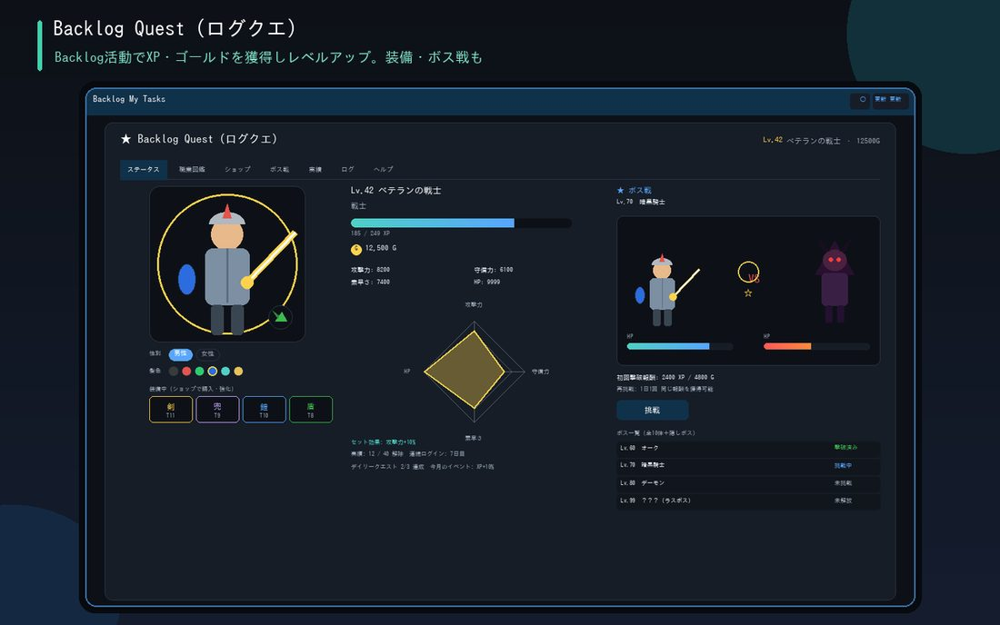

日々のタスク処理が、そのまま経験値になる実績連動RPG。正式リリース済み・デフォルトON。不要な場合はオプション画面からいつでもオフに切替できます。
戦士・魔法使い・武道家・アイドル・歌手・俳優・サッカー選手・野球選手
ログイン・タスク完了・コメントで経験値を獲得。10Lvごとに称号が進化。相棒のペットも一緒にレベルアップ
武器・防具・兜・盾を全11〜12段階で収集。装備すると見た目にも即反映
10Lvごとにボスが出現。条件達成で隠しボスも姿を現す

ログイン継続・タスク作成／編集／完了・コメント投稿や感謝コメントで経験値とゴールドを獲得
攻撃力・守備力・素早さ・HPの4ステータスをレーダーチャートで表示。称号は10Lvごとに進化
武器・防具・兜・盾を全11〜12段階で収集。ショップで購入し装備すると即アバターに反映
10Lvごとのボス戦はアニメーション演出付き。隠しボスや実績バッジ、日替わりクエストも用意
レベルとともに進化する相棒ペットが同伴。名前付けや見た目の切り替えも可能
プロジェクト・マイルストーン単位の共同ボスとチームリーダーボードを1タブに集約。「本日のおすすめ行動」ダイジェストで今やるべきことも一目瞭然